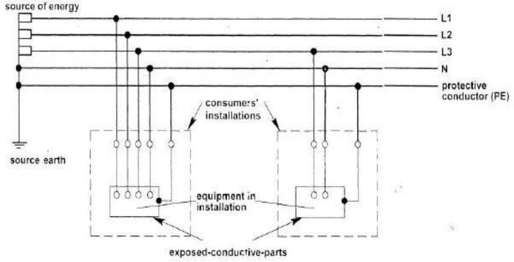
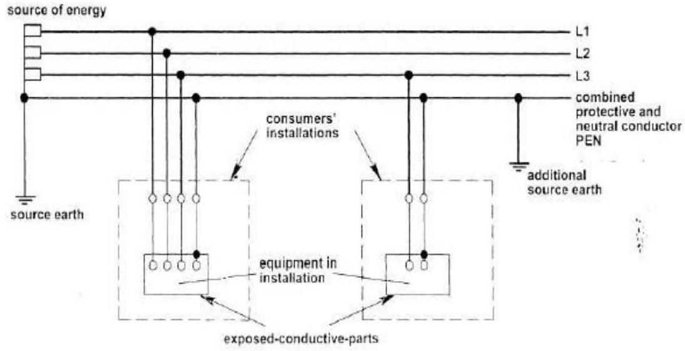
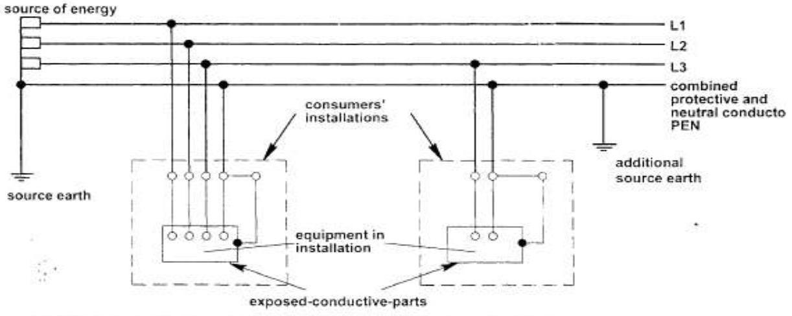
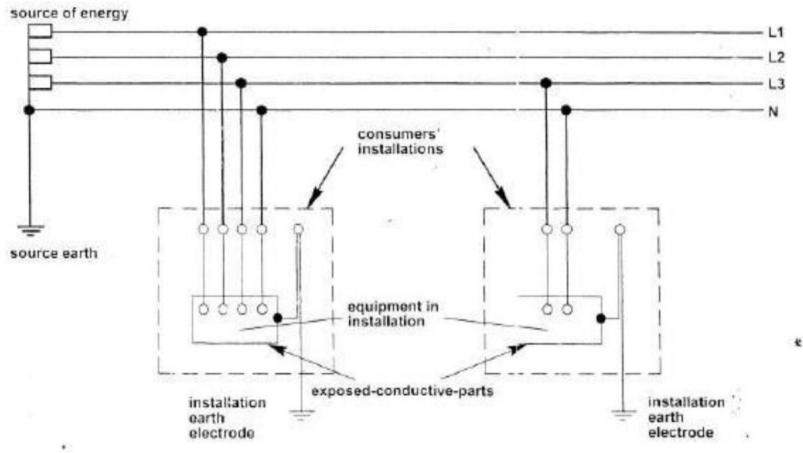
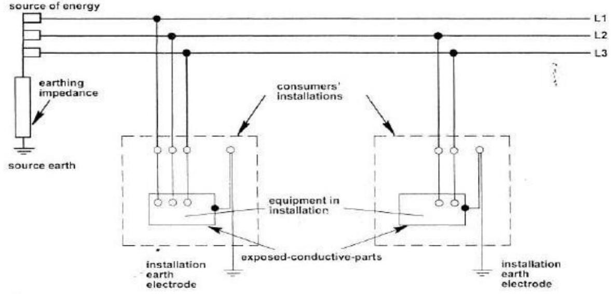

Earthing Systems
EARTHING SYSTEMS/ARRANGEMENTS
- Factors affecting the earth impedance
- Type of earth/soil (eg, clay, loam, sandstone, granite)
- Stratification; layers of different types of soil (eg, loam backfill on a clay base)
- Moisture content
- Temperature
- Chemical composition and concentration of dissolved salt
- Electrode type and Electrode size
- & BS 7671 lists five types of earthing system:
- TN System
- TNS System
- TN C S System
- TN C system
- TT System
- IT System
Where:
- Earth (from the French word Terre
- Neutral
- Separate
- Combined
- Isolated
TN-S System
- Separate neutral and protective conductors throughout the system.
- The protective conductor ($\mathrm{PE}$) is the metallic covering of the cable supplying the instail, titions or a separate conductor.
- All exposed-conductive-parts of an installation are connected to this protective conduc' or via the main earthing terminal of the installation.
TN-C System
Fig 2.2 TN-C system
- Neu'ral and protective functions combined in a single conductor throughout system.
- All c posed-conductive-parts of an is stallation are connected to the PEN conductor.
- Regulation 8(4) of the Electricity Safety, Quality and Continuity Regulations 2002 states that a consumer shall not combine the neutral and protective functions in e single conductor in his consumer's installation.
TN-C-S System
Fig 2.4 TN-C-S system
- Neutral and protective functions combined in a single conductor in a part of the system.
- The usual form of a TN-C-S system is as shown, where the supply is 7N- a and the arrangement in the installations is TN-S.
- This type of distribution is known also as protective multiple earthing.
- The supply system PEN conductor is earthed at two or more points and an earth electrode may be necessary at or near a consumer's installation.
- All exposed-conductive-parts of an installation are connected to the PEN conductor via the main earthing terminal and the net terminal, these terminals being linked together.
TT System
Fig 2.5 TT system
- All exposed-conductive-parts of an installation are connected to an earth electr sde which is electrically independent of the source =arth.
IT System
Fig 2.6 IT system
- All exposed-conductive-parts of an installation are connected to an earth electrode.
- The source is either connected to Earth through a deliberately introduced earthing impedance or is isolated from Earth.